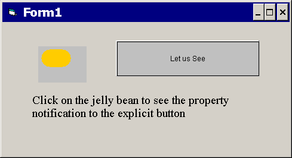
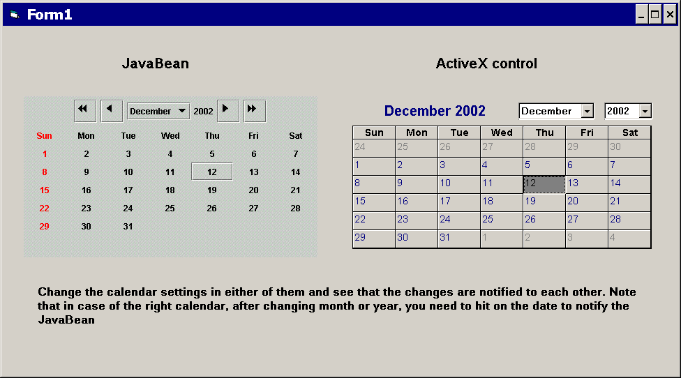

Below are two application examples:
This application consists of an ActiveX container with two beans packaged as
ActiveX controls: BoundPropTest, a JavaBeans button;
and the JellyBean bean. The applications works because the button
is registered as a listener with JellyBean. Every time the JellyBean
is clicked, the button receives notification and code is called that changes
the text on the button. The resources for this application—boundprop.exe,
BoundPropTest.dll, and JellyBean.dll—can be
found in the boundprop subdirectory of
this document, should you care to set it up and run it.
To run the application on your computer, copy BoundPropTest.dll
and JellyBean.dll to <jre_home>\axbridge\bin
on your computer. Register both .dll files with regsvr32.exe.
Then execute boundprop.exe. You should see the following:

The Calendar application is similar. It consists of an ActiveX container with
an ActiveX control calendar and a JavaBean calendar. In this application, both
components are registered with each other as listeners. Changes in one calendar
are reflected in the other via change notification. Resources for this application—cal.exe
and JCalendarPanel.dll—can be found in the cal
subdirectory of this document, should you care to set it up and run it. (Copy
JCalendarPanel.dll to <jre_home>\axbridge\bin
and register it; then execute cal.exe. You should see the following.
